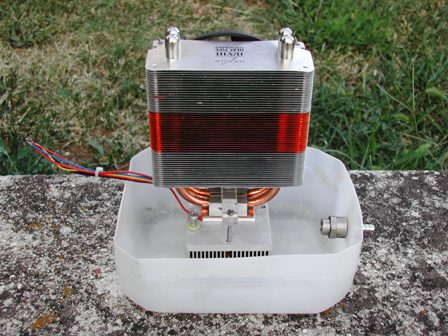
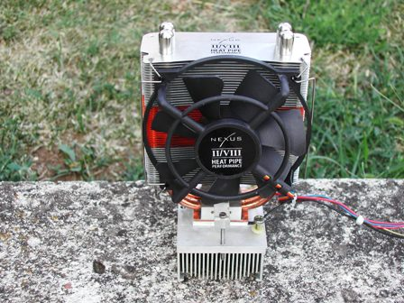
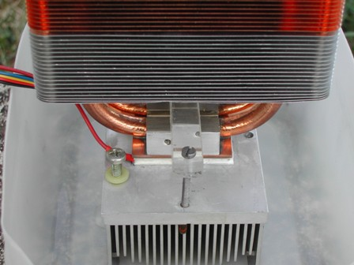

Ho visto qualche giorno fa in un mercatino dell'usato a prezzo irrisorio uno di quei radiatoroni da computer muniti di ventola per quei patiti della supervelocità o dei supergiga che più che radiatori da microprocessore sembrano pezzi di auto da corsa e sono anche esteticamente molto curati.
Siccome le dimensioni della piastrina di rame di base erano esattamente identiche alla mia cella di Peltier (link 1 e link 2), l'ho acquistato con l'idea di fare per gioco un nanocondizionatore che mi soffi in faccia, GRATIS, un alito di aria fresca mentre pasticcio con le mie cose in questo carontico periodo.
La cella di Peltier ha un pessimo rendimento (si sa quanto termodinamicamente sia facile fare il caldo e quanto sia difficile fare il freddo!) e la mia assorbe 3 ampere a 12 V, pari a 36 W divorati, quindi se si vuole che lavori gratis occorre una sorgente altrettanto gratuita di energia, altrimenti consumare 36 W per avere in cambio solo un microscopico refolino di fresco non avrebbe senso.
Essendo io sono un forte simpatizzante delle energie alternative (10 KW di fotovoltaico e altrettanti di termico sul tetto), sul mio lab c'è anche anche un piccolo pannello fotovoltaico da 50 W, col quale carico una batteria da auto da 40 A/h.
Et voilà parecchi watt GRATIS per la Peltier!
E' indispensabile che il calore prodotto dalla cella, che su una faccia raffredda e sull'altra riscalda, sia estratto continuamente in maniera molto efficace dato che il rendimento termico dipende dalla differenza di temperatura tra le due facce.
Per estrarre ed allontanare il calore prodotto ho applicato alla faccia calda un altro radiatore in alluminio per PC, più piccolo ed immerso in una vaschetta di acqua con ricircolo.
L'acqua, con il suo grandissimo calore specifico e la conducibilità termica molto più elevata dell'aria garantisce che la faccia che si riscalda sia tenuta più fredda possibile ed il ricircolo avviene con un filino d'acqua che percorre la vaschetta, uscendo da un foro di troppo pieno.
Poichè niente al mondo è del tutto gratis, il marchingegno qualcosa consuma anche lui... ed è il filino d'acqua che smaltisce il calore prodotto dalla Peltier.
Le immagini valgono più di mille parole e così si capisce come ho imbastito questo giochino da estate torrida.

I due radiatori (freddo in alto, caldo in basso)

Vista di fronte, vaschetta vuota con il troppo pieno per l'acqua

Vista retro, la ventola a 12 V

La cella Peltier (linea bianca) stretta tra i due radiatori
Quanto raffredda un accrocco del genere?
C'è una singola cella e quindi raffredda poco poco, giusto un refolino di aria di qualche grado più fresca di quella dell'ambiente, ma che unita al vortice d'aria prodotto dalla ventola fa piacere avere sul tavolo di lavoro in queste sere afose.
Direi che "nanocondizionatore" è un termine appropriato.
Certo io sono assai fortunato perchè ho la possibilità di far arrivare facilmente "il filino d'acqua" fino alla vaschetta e altrettanto facilmente scaricare con un tubetto fuori dalla finestra il troppo pieno senza dar fastidio a nessuno (anzi, facendo un favore a delle povere piantine di fragola, sempre assetate); idem come far arrivare i 12 V dalla batteria ricaricata dal sole e tutto il resto.
Ma tant'è, il mio blog è un diario della situazione così come essa è.